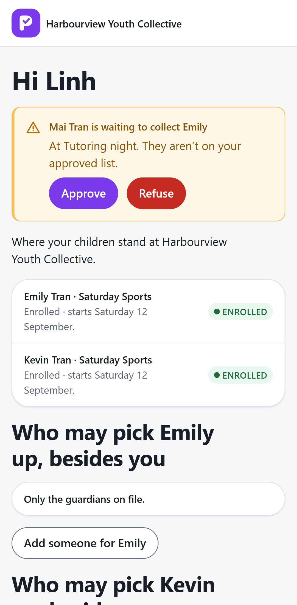
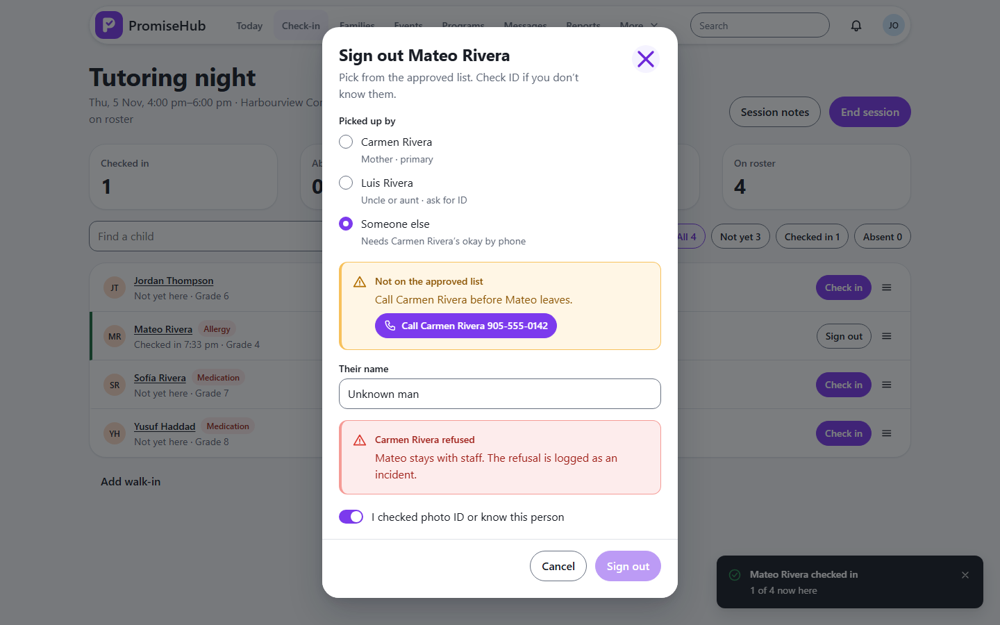

PromiseHub · Video 27
Confirm an exceptional pickup
Not on the list? Ask the guardian, then act on the answer
Not on the list? Ask the guardian, then act on the answer
Approved, then signed out with Rosa.


| Case | Answer |
|---|---|
| Approved | Sign-out allowed |
| Refused | 422 at sign-out, incident logged |
| Decided twice | 404 |
| Not checked in | 422 |
Next: messaging families